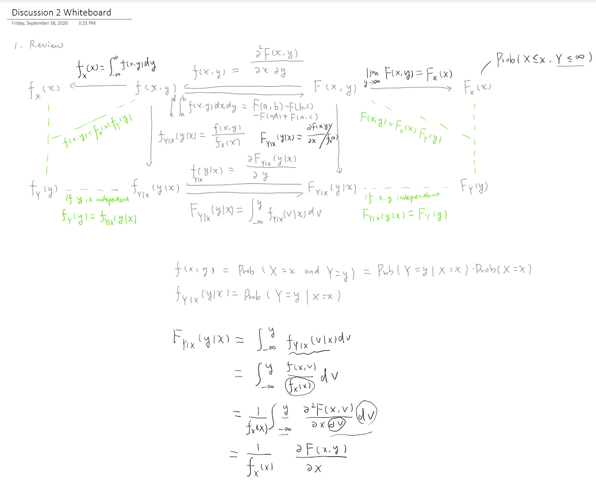

Graduate level Econometrics
January 13, 2020
Date
January 13 – 15, 2020
Time
2:15 PM – 2:45 PM
Location
Department of Applied Economics,University of Minnesota
I have been fearful of econometrics since the first lesson in college. Admittedly, it was among the hardest courses and terms like “asymptotic” and “parametric” were just too abstract. After taking two versions of this course from different institutions and being the teaching assistant for four instructors that taught this course, I would say that I have climbed up on the spiraling ladder of learning enough to be no longer scared of it. Perhaps the best way to learn it is through viewing the same thing from different angles, and my favorite angle is through Professor Joe Ritter’s data simulation and visualization.
I love econometrics because it turns data into stories and it is a field that is evolving from day to day. I always look forward to teaching it at various levels. Below is a snapshot of the whiteboard writing from a recitation I held on statistics review early in the semester.

Here are some comments from the students during teaching evaluation for that semester.
In the recitation, Ling well summarized the content we learned in class, linked content between different modules, and explained our questions to help us better understand the content. The preparation work for our assignments also helped a lot.
Ling was an exceptional TA. I found the material very challenging, and Ling’s recitations organized the concepts very well for me. I especially appreciated when she would make tables of to show the similarities and differences between various econometric models. Her recitations were also always very well structured for the time given. She was also very helpful during office hours and available over email for questions.
- Posted on:
- January 13, 2020
- Length:
- 2 minute read, 270 words
- Categories:
- teaching assistant
- See Also: